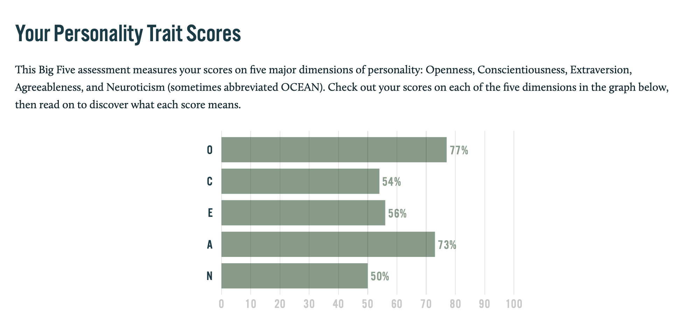

I'm an enthusiastic and positive individual that strives to do right by other people and also expect the same in return. I enjoy some sports, my hobbies range from playing golf to spending a good hour (or 12) playing Playstation. I've spent the pandemic learning to broaden my culinary skills, developing my digital skills and learn new things.
I was born in Melbourne with my background stemming to my paternal grandparents migrating from Europe during the Second World War and my maternal Grandparents were third generation Australians who descended from migrants from England.
One of my favourite places on this planet are the tropical getaways found in Thailand and Bali followed by the place I grew up that I will always call home - the Gold Coast. I am also currently halfway through a Bachelor of Business that is undertaken through Griffith University in Queensland.

One of my most recent trips overseas (which was 2019 thanks to Covid) was to Bali and played at the Bali National.

My interest in IT began from the young age of eight or nine years of age, where I took computer classes as an elective and learned the basics, such as Microsoft Office and also participated in the Lego robotics workshops that were held after school some weeks. As years went by and I entered my teenage years I was interested in the world of modding computer games, such as modding new units in Age of Empire II and Star Wars Galactic Battlegrounds, two real time strategy games I spent countless hours on playing and making my own campaigns and maps. The inner workings of the game really intrigued to modifying content to match up things I envision and helped a few Pokemon fan-game projects during high school with graphics and design elements for a team building experience.
I remember picking up my first video game, called Wonder Boy on the Sega Master System when I was around three years old and exclaiming to my parents “sunshine in the trees!” whenever my character died, it was amusing at the time and essentially inducted me to enjoy gaming as a hobby as I got a little bit older. I remember when we got our very first video game console, the Super Nintendo Yoshi’s Island console bundle for Christmas in 1995 and I knew it was going to change my life forever. I remember gathering around with my mum, dad and younger sister and taking turns playing the first level and being defeated by Shy Guys and the Pirahna Plants and getting to a dead end. Everyone was perplexed as to where to go and we decided to put the game down for a break as we had Christmas lunch to go to. I remember turning the game back on when we got home and I figured out to throw one of Yoshi’s eggs at the question mark clouds and I was treated as if I discovered time travel! This memory is one that will always return me back to that moment and where my real interest in IT began from - the solving of problems.
I chose to study at RMIT as it has the reputation of being a premium tertiary educator, and with the way the
world has evolved and is still evolving in the digital space, I feel it not optional but a necessity to be equipped
with knowledge and understandings and further education in these industries. I anticipate to complete my
two units of study (Introduction to IT and Introduction to Programming) to gain entry into a Bachelor of
Information Technology.
My expectation from studying these units is to form a foundation of knowledge that is necessary to proceed
further in these areas of studying and really get a feel for an area that piques my interest. I enjoy working
on my computer and find the ease of being remote practical and efficient that matches my work ethic. I
also expect to learn a lot of what I don’t know when it comes to information technology.
A role with a game development firm is a career I would be aspiring to. Upon researching roles I came across a senior Unity 3D developer for Block
Ape Scissors located in Brisbane, albeit a remote tole. The role itself is related to game development in the blockchain landscape which is also an
area of interest of mine. My understanding of the work to be performed in the role is to have the capability to contribute to the development of a
digital 3D space for their game 'Block Ape Scissors' which is a stylised 'rock, paper and scissors game' that interacts with blockchain assets and
landscapes, with programming these to intertwine together and as suspected be part of a "metaverse", which Block Ape Scissors has called the
"Earniverse".


The role is appealing to me or something similar as I find the environment of blockchain technology to revolutionise the way people will engage with one another. Unfortunately there is a negative connotation with cryptocurrency and NFT's as the monetary values are more desired with ignoring the benefits that are
possible to be achieved, for example Loopring.org's Layer 2 zl<; parking allowing minimal Ethereum gas fees and how that technology can revolutionise and create a seamless experience on a NFT marketplace. The fact that a play-to-earn game is striving for utmost quality finishes and being located on Australian soil makes the endeavour more ideal, turning a simple game concept that even mainstream RPG's emulate in a way, such as Pokemon's Grass/Fire/Water beginning choice for an example.
The necessary experience required would be to have employment with another game studio, to prove employee viability. The benefit with this pre-requisite is that it is relatively simple to be able to design a game and have it developed for release on Steam. The extensive list of requirements in knowledge in C#, FishNet and JSON for example highlights further education in this area of study is required, as well as full time experience with Unity. In addition to the knowledge more desirably chased by the employer is key understanding in how blockchain technologies work and web development shows there is an extensive list of requirements and employment in this industry to build a portfolio around to even be considered as an applicant.
With limited experience with Unity, I have developed personal skills acquired with using b1ender which would be easily transferable.
The best pathway to ensure success in obtaining a role such as this is to develop more understanding and education relevant to game development and further refine employability in this area of field. Beginning roles to garner experience would be beneficiall as well as working for experience at some organisations to gain a working record in this industry.


Based on these tests, the observation made is that I am someone that is generally hands on, open to ideas and expresses contribution. I feel these assessments define my character very well that I'm relatively well balanced, as evidenced in the Myer Briggs test.